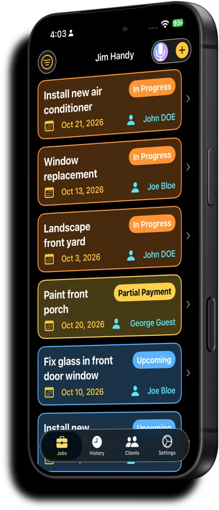
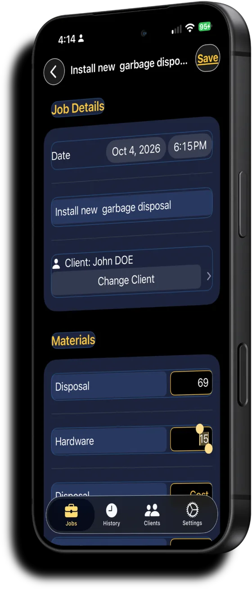
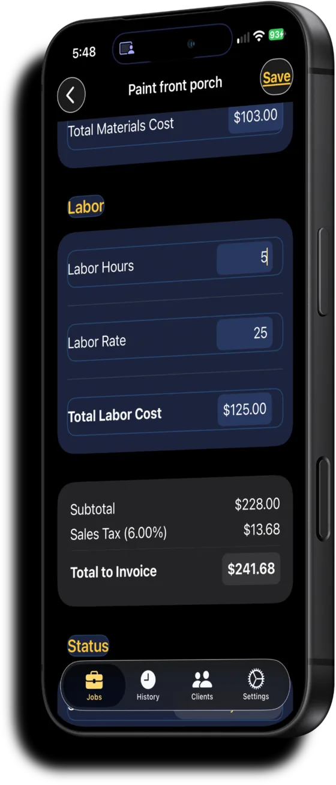
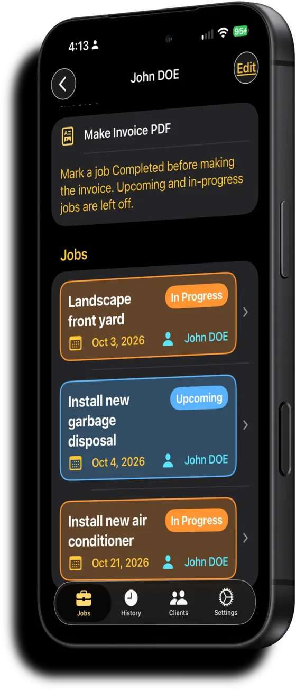
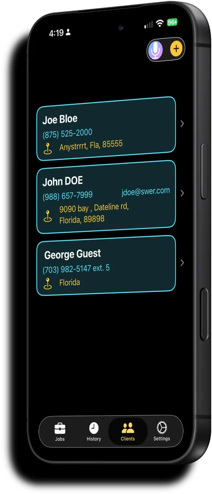

Jim Handy
Jobs, clients and invoices for the handy pro.
Track every job from the first call to the final invoice. Add jobs by voice, see what is upcoming or in progress at a glance, log materials and labor, and turn completed work into a PDF invoice for your client.






Scroll sideways to see every screen
What you can do
Add a job by talking
Answer a few short questions out loud, like “What is the job?”, and the job is created for you.
Every job at a glance
Jobs are color-coded as Upcoming, In Progress or Partial Payment, with the date and client on every card.
Costs add up for you
Enter materials, labor hours and your rate. Sales tax and the total to invoice are calculated automatically.
Invoice PDFs in a tap
Mark jobs Completed and make a PDF invoice for any client in one step.
Your clients in one place
Phone numbers, email and addresses for every client, with all of their jobs one tap away.
See Jim Handy in action
A short demo video is on its way.
Jim Handy is almost ready.
A public TestFlight beta opens soon. Want an invite when it does?